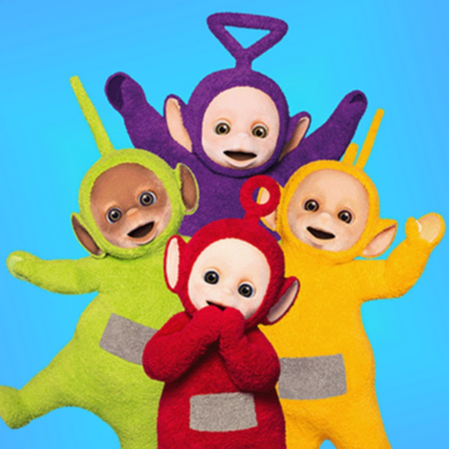

Bienvenidos
Descripción
Somos un equipo de estudiantes de Ingeniería Civil Informática. Nos formamos con el objetivo de colaborar, compartir conocimientos y aplicar de manera práctica lo aprendido sobre estructuración web, estilos y despliegue en servidores.
Propósito
Nuestro propósito es diseñar, construir y desplegar sitios web estáticos funcionales y atractivos, aplicando rigurosamente las mejores prácticas en HTML, CSS, Bootstrap y Docker, demostrando nuestra capacidad para resolver problemas trabajando en equipo.
Nuestras Fortalezas
- Trabajo colaborativo y buena comunicación para coordinar avances
- Creatividad en el diseño de interfaces usando CSS y Bootstrap.
- Resolución metódica de problemas e implementación de contenedores Docker.
